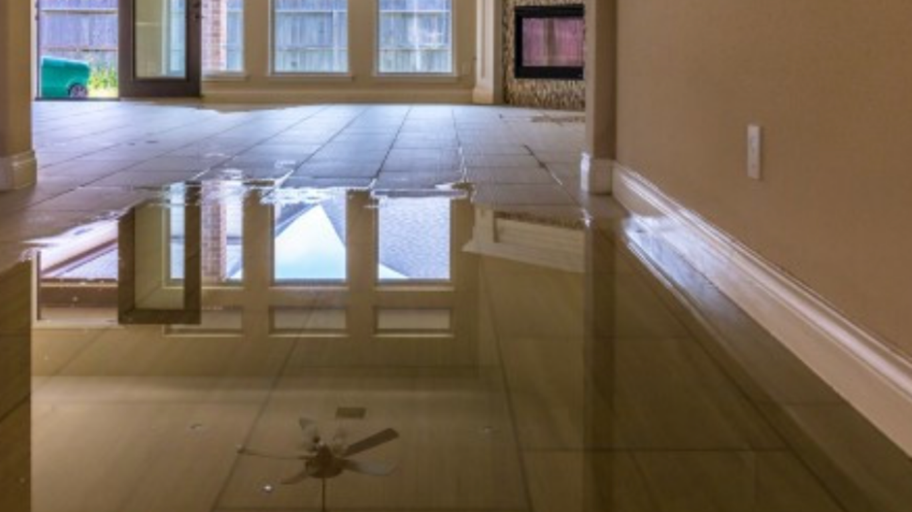

We provide fast-response water damage restoration services that help DFW homeowners address winter-related water issues before they turn into costly structural repairs.
Winter weather in the Dallas–Fort Worth area may not bring constant snow, but it still creates serious water damage risks for homes and businesses. Freezing nights, sudden warm-ups, and seasonal storms place stress on plumbing systems, roofing materials, and foundations. Understanding how winter water damage happens in DFW allows property owners to act quickly and protect their spaces during colder months.
When temperatures drop below freezing, exposed or poorly insulated pipes are at risk of cracking or bursting. Many homes in North Texas are not built for extended cold spells, which makes plumbing systems especially vulnerable during sudden freezes. When pipes freeze, pressure builds inside the line, often leading to ruptures once the ice expands.
These breaks frequently occur behind walls, under cabinets, or in attics, releasing water long after the initial freeze passes. Even slow leaks can saturate drywall, flooring, and insulation in a short time. Homeowners who suspect pipe-related issues often need immediate help from a professional water damage restoration team to limit spread and begin drying affected materials.
DFW winter storms bring a mix of freezing rain, sleet, and high winds that can compromise roofing systems. Damaged shingles, flashing, or roof decking allow moisture to enter attic spaces during storms or as ice melts. This water may drip slowly, making it difficult to notice until stains appear on ceilings or walls.
Attic insulation can absorb moisture and hold it against wood framing, increasing the risk of structural damage and secondary issues like mold growth. Regular inspections after winter storms help identify roof vulnerabilities early. When storm-related water intrusion occurs, fast response reduces the chance of long-term repairs and interior damage.
Cold weather changes how moisture behaves inside homes. As warm indoor air meets colder surfaces, condensation forms on windows, exterior walls, and poorly insulated areas. While condensation may seem minor, repeated moisture exposure can soak into building materials over time.
Common problem areas include window frames, crawl spaces, basements, and attics. These damp conditions create the perfect environment for mold and material breakdown. Homeowners dealing with recurring moisture often benefit from professional evaluation and targeted cleanup through trusted restoration services that address both visible and hidden water issues.
Water damage during winter often goes unnoticed because it develops slowly and remains hidden. Subtle warning signs include peeling paint, warped flooring, musty odors, or unexplained increases in indoor humidity. Some homeowners notice higher utility bills caused by damp insulation losing effectiveness.
Another overlooked sign is staining on ceilings or walls that appears days or weeks after a freeze or storm. These stains usually indicate water traveling along framing before becoming visible. Early detection helps reduce the scope of repairs and prevents damage from spreading into unaffected areas.
Health and comfort are major concerns when water damage occurs in winter. Damp environments affect indoor air quality and can aggravate respiratory sensitivities, especially when families spend more time indoors. Mold growth tied to winter water damage increases these concerns if moisture is not addressed promptly.
Property damage and insurance questions also create stress. Homeowners often wonder whether frozen pipes, roof leaks, or storm-related damage are covered. Proper documentation and timely mitigation play a key role in insurance claims. According to guidance from the Insurance Information Institute, preventing further damage after a loss is an important responsibility for property owners.
Preventing winter water damage starts with preparation. Insulating exposed pipes, sealing air leaks, and keeping indoor temperatures consistent help reduce freezing risks. After storms, checking ceilings, attics, and exterior areas for signs of moisture allows homeowners to catch problems early.
Prompt response matters even when damage appears minor. Small leaks can lead to major repairs if left untreated. Professional moisture detection tools help locate water behind walls and under flooring, limiting demolition and keeping restoration focused.
Winter water damage often requires specialized drying techniques due to cooler temperatures and limited ventilation. Experienced restoration teams understand how to stabilize affected areas, remove moisture efficiently, and prevent secondary damage. This expertise becomes especially important when water issues overlap with freezing conditions or storm-related events.
If you’re looking for reliable help with winter water damage in DFW, SWAT Restoration provides 24/7 emergency response, water removal, and full reconstruction services. Our team acts quickly, communicates clearly, and treats every property with care from initial assessment through final repairs. When winter weather threatens your home, having a trusted local restoration team makes all the difference.